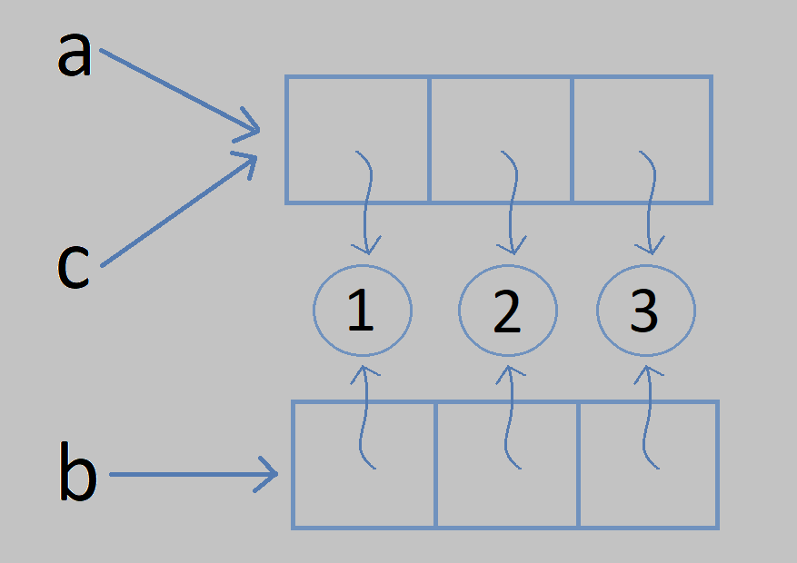

class: center, middle # Unit 1 ## Fundamentals of Programming --- ### General Announcements - Our first large assignment is due Thursday Dec 13. - You have most of the tools to start Crypto. So start! - Starting over: when should you consider throwing your answer away? --- class: center, middle # [Studio Solution](https://runestone.launchcode.org/runestone/static/thinkcspy/Studios/sorted.html) --- class: center, middle # Chapter 10 Lecture ## Lists --- ### Topics - Mutability - Methods - Referencing - Aliasing versus Cloning - List Comprehensions - `split` and `join` --- ### Mutability - What does it mean for something to be mutable? - Are strings mutable? - Let's do some examples from the command line! --- ### Methods - [Documentation](https://docs.python.org/3/tutorial/datastructures.html) - We will see some examples later --- ### Referencing - Lists are actually made up of references to other objects - This causes us to have different ideas of equality: `==` and `is` - How are these equalities different? ``` a = [1,2,3] b = [1,2,3] c = a print(a == b) print(a is b) print(a is c) ``` - What is the output? ---  --- ### Aliasing versus Cloning - Aliasing creates a reference to the same list - Cloning creates a copy of the list ``` a = [1,2,3] b = a[:] c = a print(a is b) print(a is c) ``` - What us the output? --- --- ### List Comprehensions - These are my favorite! - Given a list of numbers, make a new list of each odd numbers square. - Example: - List given: `[1,2,3,4,5]` - List created: `[1,9,25]` --- ### `split` and `join` - Example: - `x = "1, 2, 3, 4"` - `x.split(", ")` - `words = ["Hi", "how", "are", "you"]` - `words.join(" ")` --- ### Chapter 10 Exercises - [Chapter 10](https://runestone.launchcode.org/runestone/static/thinkcspy/Lists/Exercises.html) - 6 - 10 - 11 --- class: center, middle # Q&A --- class: center, middle ## Studio Walkthrough ### [Bugz](https://runestone.launchcode.org/runestone/static/thinkcspy/Studios/bugz.html) --- ### TA-Led Activity: Pair-programming - [What is it?](https://www.youtube.com/watch?v=dYBjVTMUQY0) - Two programmers working together at one station - One drives, the other(s) navigates as each line of code is typed - The navigator problem solves as the driver types - Teams will switch roles frequently (frequency depends on team) - (Sometimes, both drive one machine together)